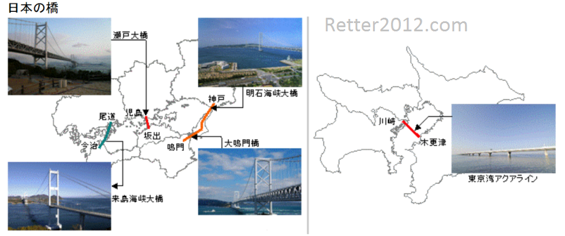

返回主页
日本主要桥梁

日本海底隧道：青函隧道（连接日本本州青森地区和北海道函馆地区）。青函隧道为双线隧道，全长为53,860米，其中海底部分为23,300米。青函隧道于1964年开始启动，历经24年的施工建设，共耗资6890亿日元，于1988年3月13日正式投入运营。从青森站和函馆站相对发出，电车从海底通过津轻海峡大概用了30分钟，从此结束了日本本州与北海道之间只能靠海上运输的历史。
version:1.0; jobnet@188.com ©
retter2012.com